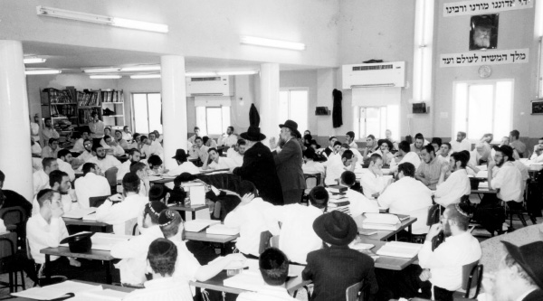

Personal Remodeling Through Torah
About the person who surprised the participants of the farbrengen with Chassidishe ideas in fluent scientific and Chassidic terminology. * About the guard who did not fall asleep on duty at the 770 building in Kfar Chabad, and about the person who showed up for Tanya classes with a dog and a camera. * Stories about the power of Torah study and its effect on a Jewish soul.

In the HaYom Yom the Rebbe describes how they learn Torah in Gan Eden. By way of example, the Rebbe quotes the Chazal (Sanhedrin 99b) “one who learns Torah l’perakim” (intermittently). In Gan Eden this is understood positively, as referring to one who learns Torah with such dedication that the Torah “takes him apart,” i.e. it reshapes him into how a Jew who learns Torah ought to look.
Nearly all shluchim can tell about someone who began learning Torah and the Torah “took him apart” and he became a new entity. This does not happen in one day; it might take months, even years. What they all have in common is Torah study which builds up the person bit by bit.
“HASKALA” VERSUS HASKALA IN CHASSIDUS
Some Chassidim were sitting at a farbrengen in Beit Shaan towards the end of Shabbos. They sang niggunim and spoke about topics in Chassidus. Then two young academics walked in. One of them, named Chein, I know of as a young genius scientist, who is into researching all spiritual disciplines and possesses a wide-ranging knowledge of Chassidic quotes about the soul powers.
In order to be mekarev Chein, I asked him to say something from the Chassidus he had discovered in his research. Chein raised a deep question which most people present were hardly familiar with. While I wondered how to respond to him without boring the others, I heard, to my great surprise, R’ Yigal Chaim Nodelman, one of the Chassidim present, responding in fluent Chassidic and scientific terminology. This left Chein, I and the rest of the participants open-mouthed in amazement.
Who is Yigal Chaim Nodelman who, until only a few years ago, was a philosophy student in university? It was only when he discovered Chassidus that Torah “took him apart” and today he is a devoted Chassid who gives shiurim himself!
R’ Nodelman made aliya from Russia over twenty years ago. After serving in the army he went to the United States where he discovered Chabad on 95th Street in Manhattan. When he returned to Eretz Yisroel and began his studies at Tel Aviv University, of course he visited the Chabad house at the university.
On his first Shabbos at the Chabad house, he met the shliach, R’ Yoram Cohen of Bat Yam. For the first time in his life, Yigal heard concepts like G-dly soul, animal soul, mochin, middos, kochos ha’nefesh, and livushei ha’nefesh and he was fascinated by R’ Cohen’s explanations. The highlight was when R’ Cohen opened a Tanya and read the words, “and the second soul within the Jew is verily a part of G-d above.”
Yigal Chaim stopped him and asked, “Where is this material studied?” R’ Cohen began teaching him Tanya, and from then on everything was different. Within a month, Yigal was wearing tzitzis, a yarmulke and had a beard. Along with his university studies, plus a job, he began learning in the yeshiva in Ramat Aviv.
Yigal delved more and more into the study of Chassidus and was helped a great deal by the Chabad rabbi on campus, R’ Fishel Jacobs. Every Shabbos spent with R’ Jacobs lifted Yigal to new attainments in Torah and the Chassidic way of life. He continued to progress, gaining prestigious academic titles in philosophy and, l’havdil, learning the deepest maamarim in Chassidic philosophy.
“I’ll never forget,” recalled Yigal Chaim, “the shiurim by R’ Goldberg (of Ramat Aviv) in the maamarim of 5666. They opened worlds to me that I had been unfamiliar with and caused an inner transformation, as well as providing a whole new understanding that stood in contrast to everything that I learned in university. Back then, I absolutely identified with the story in the introduction to the kuntres, ‘The Tzemach Tzedek and the Haskala Movement,’ which tells about Mr. Ginsberg, one of the leading maskilim in Vilna. He went to observe a Shabbos in Lubavitch and heard two maamarim from the Tzemach Tzedek. He fainted during the second maamer. When he returned to Vilna he told his friends in the Haskala movement that compared to the Rebbe’s haskala, their haskala was nonsense.”
Yigal Chaim continued learning, received smicha, and married a girl from Beit Shaan who had learned with my wife and who had then continued in Ohr Chaya in Yerushalayim. Today they live in Beit Shaan.
Now we have someone who can respond to the learned intellectuals of our day in the jargon of secular higher education and with strong Chassidic faith.
“TAKEN APART” WHILE GUARDING 770
R’ Moshe Gruzman is on shlichus in Rishon L’Tziyon and spends most of his day giving shiurim to people at varying stages of Jewish involvement. R’ Gruzman says this is how it goes with all of them, it’s a progression. At first they learn Torah, they learn to say a bracha before and after eating, then he invites the entire family for Kiddush and Havdala, then they start wearing a yarmulke, until one day a beard appears. One Shabbos, they start going to shul (instead of the beach) until they finally buy a sirtuk and switch their children to a religious school. It is only then that it becomes apparent how the study of Torah was just the beginning.
By way of example, R’ Gruzman tells of a young man from Rishon L’Tziyon who spent long hours guarding the 770 building in Kfar Chabad. There wasn’t much for him to do and to stave off boredom he went into the zal, opened a Tanach and read a dozen pages. To his amazement, it was actually interesting and edifying, and the next day he read some more. He was an intelligent and learned young man, and although before guarding 770 he hadn’t taken any interest in Jewish sources, when he discovered Tanach he read it avidly from cover to cover.
When he finished Tanach, someone in 770 recommended Tanya to him. After Tanya, he read Kitzur Shulchan Aruch, maamarei Chassidus, Mishnayos, Gemara and other s’farim. The hours he spent at work at 770 weren’t enough for him and he looked for a chavrusa close to home. That is how he got to R’ Gruzman who learned with him occasionally and also explained how you go from learning to mitzva observance.
Today, he has a proper Jewish home, he davens in shul three times a day, keeps kashrus and Shabbos, and attends many shiurim. In Gan Eden they call this “Torah taking him apart.”
IT BEGAN WITH SOME SHIURIM
R’ Roi Tor is a shliach to the kibbutzim in the Beit Shaan Valley. At a farbrengen, he told about a member of one of the kibbutzim whom the Torah “took apart,” and even united the entire family around Torah study.
By the way, about three years ago, the district council decided to change the name of the council. Instead of “Beit Shaan Valley” it is now “Emek Ha’maayanos.” The members of the kibbutzim changed the name because of the numerous springs in the valley, but we know the truth, that “maayanos” refers to the wellsprings of Chassidus, “when your wellsprings spread outward.” Thanks to the work of R’ Tor in all the kibbutzim of the valley, the wellsprings of Chassidus have reached every Jewish home. The souls of the members of the council sensed this and they renamed the valley, “Emek Ha’maayanos.”
So this member of the kibbutz comes to a shiur every week. He already knows how and when to light a menorah, wash netilas yadayim and the bracha before and after eating. T’fillin, yarmulke, tzitzis, and kissing the mezuza are also part of his transformation. There is just one little problem in that his wife is not happy with all this. She constantly reminds him that this is “his thing,” and as a family they will continue life as usual.
She recently suggested that they exercise their right as members of the kibbutz and build a nice home. Her husband agreed to all his wife’s plans for a new house and said he had just one request, that the kitchen have two sinks. She agreed.
Apparently, their two children had heard conversations between their parents and were influenced by one of the sides. As R’ Tor related, the boy going into third grade told his parents that he didn’t want to continue in the kibbutz’s secular school the following year; he wanted to attend the religious school of the kibbutzim. His father was happy and even his mother, who champions independence and free choice, agreed to the change. Furthermore, in order not to have the two children attending two different schools, they registered the younger brother, going into first grade, for the religious school too.
Word got around the kibbutz and another boy registered. There was just one problem. Approval was needed by the secretariat of the kibbutz, and money had to be allocated to provide them with transportation. The chances of this happening were not high.
The father knew he needed a special bracha. He spoke to R’ Tor who wrote his request to the Rebbe and put it into a volume of Igros Kodesh. They opened to a long letter about bris mila.
R’ Tor gently asked what sort of brissin the boys had had, and the father innocently replied that for the younger boy they had not used a mohel but a doctor. After consulting with a rav, they were told that hatafas dam bris was required along with the brachos for a bris. Permission from both parents was needed for this.
Inexplicably, the mother agreed to a halachic bris. Two days after the bris, the kibbutz secretariat called to say the switch in schools was approved and money was allocated for transportation. Now, three children are picked up by bus from this secular kibbutz and are taken to a religious school.
And it all began with a shiur.
WHERE DO YOU LEARN TO BE A CHASSID?
R’ Dotan Korati, formerly of a kibbutz in the Beit Shaan Valley, is now a shliach at the Michlelet Rishon L’Tziyon (College of Management – Academic Studies), the largest college in Eretz Yisroel. He disseminates Torah among thousands of students. He told me about one student, whom we will call Tomer, who came to one of his shiurim two years earlier. Tomer said he came from a religious-traditional home. His yarmulke disappeared during his army service and after the army he toured the world.
Tomer said, “When I visited the Chabad house in Peru, I learned how nice it is to study Chassidus, Chabad-style. When I went to the Chabad house in Hawaii, I learned how nice it is to love every Jew, Chabad-style. But after all that, I remained as I was. When I came to this college and attended R’ Dotan’s Tanya classes, I learned how nice it is to be a Chassid and to live according to Tanya.”
Tomer committed to mitzva observance and to Chassidus and got married. Both he and his wife are Chassidim in the Chabad community in Gilo in Yerushalayim. Let it be said to Tomer’s credit that as soon as his parents realized what was going on with him, they went to the college and raised Cain. “How could you let a Chabad rabbi do as he pleases here in the college?”
The administration did, in fact, put a halt to Chabad’s work for a while, but in the meantime, Tomer progressed and his parents eventually made their peace with this. They worried about what girl would want to marry a guy with a beard, but in the end, they saw that their daughter-in-law was only looking for someone with a beard.
JUST DON’T TAKE APART THE TORAH
About twenty years ago, a certain fellow from Beit Shaan became interested in Chabad. He eventually took on Chabad customs, a sirtuk etc. He got married and settled in B’nei Brak. We met at a wedding of family in Beit Shaan. The officiating rabbi was a Sephardic rav and rosh yeshiva in B’nei Brak. The man, formally of Beit Shaan, told me that he lived in the same neighborhood as this rosh yeshiva and they were friends. This is the story that the rosh yeshiva told him:
“25 years ago, I learned in Yeshivas Ponovezh in B’nei Brak. Although it wasn’t easy for a Sefardi bachur to get in (because of racial bias), I had ‘yichus’. I am a relative of Rabbi Benzion Abba Shaul (d. 1998, leading Sephardic rabbi, rosh yeshiva of Yeshivat Porat Yosef). I passed the test and was accepted.
“One day, the rosh yeshiva, who was known for his sharp opposition to Chabad, called me in and gave me a letter that he had written against Chabad and the Rebbe, claiming that they acted contrary to Halacha. He told me, ‘Since you are a relative of R’ Abba Shaul, give him this letter and have him sign to it so that the public will know that it is forbidden to have anything to do with the Rebbe and Chassidus.’
“I went to my relative and said that I had a letter from the rosh yeshiva about Chabad and that the rosh yeshiva wanted him to sign to it. R’ Abba Shaul refused to take the letter from me; he didn’t even want to touch it! He asked me to read what it said. I began reading the letter. There were four or five paragraphs about not sleeping in the sukka, working with Jewish children, etc.; these are things that Misnagdim say are not according to Halacha.
“R’ Abba Shaul listened as I read it and when I finished he said, ‘You should know that in all these details, the Lubavitcher Rebbe acts not only according to Halacha, but also according to Kabbala. I absolutely will not sign this letter.’
“When I brought R’ Abba Shaul’s response back to the rosh yeshiva in Ponovezh, he realized that other rabbanim would not sign it either and he dropped the matter.”
HE CAME TO A SHIUR … WITH A DOG
R’ Yossi Lifsh, director of the Chabad house in Kiryat Eliezer in Haifa, has seen how after some shiurim, people’s lives change. He told me about someone who is very well-known in the world of journalism in Haifa and throughout Eretz Yisroel. He was a very successful photographer and member of the paparazzi. He began his journey towards Judaism thanks to R’ Motty Gal, shliach in Ramat Gan.
After some months of learning Gemara and Halacha, he was looking for something that spoke more to his neshama and he was referred to R’ Lifsh. R’ Lifsh said that at first he showed up with a long ponytail, a big dog on a leash, and a camera slung over his shoulder. He was always looking to photograph something because “something is hiding behind the picture,” he said.
R’ Lifsh didn’t mind the man’s appearance and accepted him as he was to the Tanya classes. After half a year, the ponytail disappeared. It was replaced by a beard. The dog stopped attending classes and his passion for photography was exchanged for astonishing discoveries within the pages of Tanya. He went crazy over ideas in Tanya and it changed his entire life.
Today, he lives in a religious area, learns in kollel, and when he goes on a trip or shopping he takes a Gemara or another Torah book along with him.
Please daven for a refua shleima for Yaakov Aryeh ben Rochel, the author of this column.
Shmuelevitz. "Personal Remodeling Through Torah." Beis Moshiach, no. 872 (March 6, 2013).